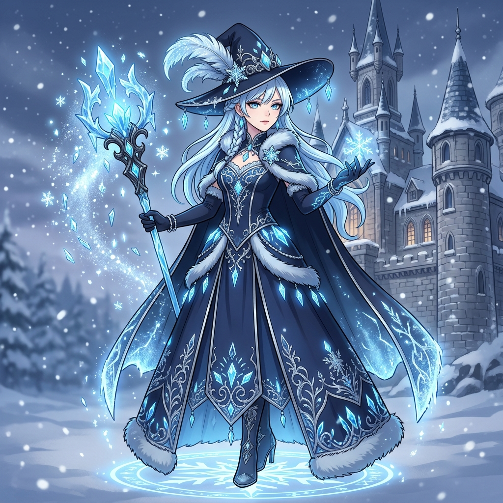
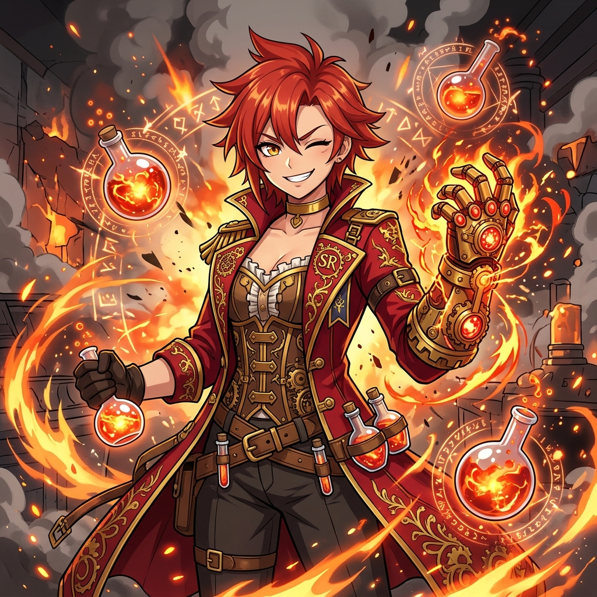
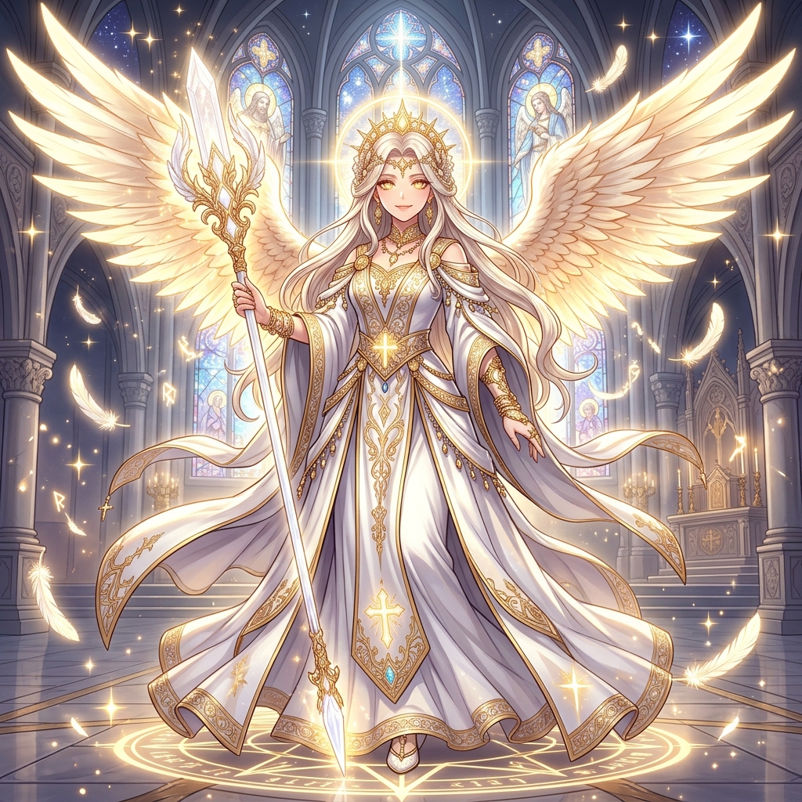
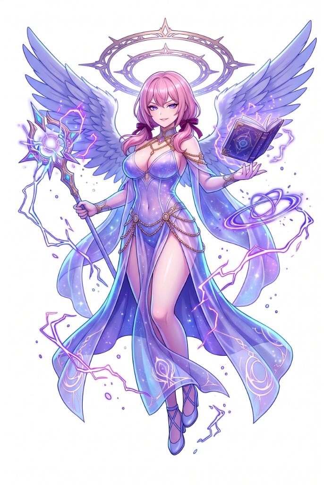

미소녀 지휘관 아트 디렉션 가이드북
등급, 속성, 역할군, 종족 간의 시각적 통일감(Cohesion)과 위계(Hierarchy)를 완성하기 위해 시장 최고의 모바일 가챠 게임들의 시각 문법을 분석하고 우리 프로젝트를 위한 표준 비주얼 매트릭스를 정립합니다.
🏆 모바일 가챠 명작들의 비주얼 통일감 구축 사례
완벽한 아트 디렉션을 구축한 게임들이 세력, 속성, 등급, 역할을 어떻게 시각화했는지 분석합니다.
- 벨로보그: 안전모, 산업용 작업복, 투박한 중장비 부품, 옐로우/오렌지.
- 빅토리아: 고딕 호러 메이드/집사 복식, 가위·청소기 등 가사도구의 무기화.
- 등급(A vs S): S급은 광각(Fish-eye) 왜곡과 무기 기믹 변형, 네온 잔상 극대화.
- 엘프 vs 마녀: 현대 오피스 정장/서류가방 vs 거대한 고깔모자/빗자루.
- 요정 vs 유령: 투명한 요정 날개/꽃 모티브 vs 반투명 하체/영혼 불꽃.
- 속성(성격): 순수(노랑), 냉정(청색), 광기(자색) 등 표정·컬러가 성격과 직관적 일치.
- 엘리시온: 정규군 제복, 베레모, 절제된 밀리터리 택티컬.
- 미실리스 vs 테트라: 각진 사이버네틱스 아머 vs 쇼걸/바니걸 엔터테인먼트.
- 필그림 (초월): 낡은 로브 속 압도적 화력, 성녀/천사 날개 모티브.
- 공통 앵커: 모든 캐릭터의 몸(목, 손등)에 빛나는 '공명 낙인' 각인.
- 이펙트 형태: 기류(비취색 칼날), 응결(기하학 얼음), 융융(마그마 연기).
- 등급(4성 vs 5성): 5성은 동양 수묵화 붓터치와 거대한 음파 링이 화면 압도.
- 방어형: 전신 판금 갑옷, 대형 방패 (하체로 쏠린 단단한 무게중심).
- 마법형 vs 지원형: 부유하는 마법구/로브 vs 성스러운 성서/악기/룬스톤.
- 등급 차별: 등급이 올라갈수록 금속 반사광(Specular)과 벨벳/실크 주름 밀도 비약적 상승.
- 실루엣 과장: 허벅지, 골반, 무기의 극단적 볼륨으로 썸네일 1초 식별.
- 부대별 제복: 스틸라인(보병 제복), 발할라(북유럽), 둠스데이(중화기 장갑).
- 등급 체계: 저등급의 양산형 단총에서 최고등급의 초거대 위성 폭격 유닛으로 진화.
📐 우리 게임을 위한 4축 비주얼 가이드라인 매트릭스
등급(Grade), 속성(Element), 역할군(Role), 종족(Race)의 명확한 시각적 규칙을 정의합니다.
 C GRADE
C GRADE
- 복식: 소박한 견습생 가죽 경갑, 심플한 제복
- 포즈: 단정한 정면 스탠딩 자세
- 이펙트: 마법 오라 없음, 소프트 배경

R GRADE- 복식: 정식 마법사 로브, 흩날리는 케이프
- 포즈: 3/4 측면 역동적인 시전 자세
- 이펙트: 옅은 1겹 원소 마법진, 불티 파티클

SR GRADE- 복식: 화려한 금박 문양, 고급스러운 판타지 기사복
- 포즈: 역동적인 무기 겨누기, 머릿결 흩날림
- 이펙트: 선명한 회전 룬 헤일로, 번개 스파크

UR GRADE- 복식: 성스러운 제단 백금 중갑, 날개 형상 견갑
- 포즈: 로우 앵글, 당당하고 위엄 있는 카리스마
- 이펙트: 거대한 다중 마법진, 빛의 깃털 폭발

U UNIQUE- 복식: 초월적인 천상 로브, 신비로운 보석 장식
- 포즈: 지면에서 떠 있는 부유(Levitation) 포즈
- 이펙트: 은하수(Nebula), 거대한 신성 후광, 별빛 가루
| 속성 (Element) | 대표 컬러 팔레트 | 헤어/아이 추천 컬러 | 시그니처 파티클 & 비주얼 모티브 |
|---|---|---|---|
| 🔥 화염 (Fire) | Crimson Red (#E11D48), Amber (#F59E0B) | 붉은색, 루비색, 흑발에 붉은 브릿지 | 타오르는 불꽃, 흩날리는 불티(Embers), 열기 왜곡, 검은 연기 |
| ❄️ 빙결 (Frost) | Cyan (#06B6D4), Ice Blue (#E0F2FE), Silver | 은발(백발), 플래티넘 블론드, 맑은 벽안 | 각얼음 결정, 눈꽃 스파크(Snowflake), 차가운 서리 안개 |
| ⚡ 전격 (Shock) | Violet (#8B5CF6), Electric Blue (#3B82F6) | 네온 바이올렛, 보라색, 짙은 남색 | 정전기 스파크, 지그재그 번개 아크, 자기장 링 플라즈마 |
| ✨ 신성 (Holy) | Pure White, Gold (#FBBF24), Champagne | 금발(골든 블론드), 백금발, 따뜻한 꿀색 눈 | 성스러운 원형 헤일로, 십자가 빛, 순백의 깃털, 천상 광선 |
| 🌌 공허 (Void) | Deep Indigo (#1E1B4B), Cosmic Magenta | 오묘한 보랏빛 은발, 은하수 그라디언트 | 공간 왜곡 균열, 은하수/별빛 가루(Stardust), 성운(Nebula) |
| 역할군 (Role) | 상징적 무기 & 도구 | 복식 실루엣 (Silhouette) | 무게중심 및 포즈 |
|---|---|---|---|
| 🛡️ 수호자 (Guardian) | 대형 타워 실드, 건틀릿, 롱소드, 랜스 | 금속 흉갑(Breastplate), 견갑, 견고한 하체 갑옷 | 두 발을 땅에 딛고 선 단단한 방어/가드 자세 (역삼각형/직사각형 실루엣) |
| 🏹 사수 (Ranger) | 장궁, 마도 크로스보우, 저격 마도총 | 가벼운 가죽 갑옷, 후드 케이프, 허벅지 홀스터 | 한쪽 무릎을 낮추거나 도약하는 날렵한 사격 자세 (사선/V자 실루엣) |
| 🔮 마법사 (Mage) | 마도서(Grimoire), 룬 스태프, 마법 보주 | 넓은 챙 모자, 긴 롱 로브 드레스, 흩날리는 리본 | 공중에 살짝 떠 있거나 마도서를 펼쳐 영창하는 부유 자세 (세로형 실루엣) |
| ⚙️ 전술가 (Tactician) | 연금술 플라스크, 정밀 기계 태엽, 나침반 | 고글, 연금술 가운, 공구 벨트, 포션 파우치 | 설계도나 장치를 조작하며 관찰하는 지적인 포즈 (소품 집중형 실루엣) |
- 체형: 키가 크고(Tall), 글래머러스한 서구형 체형.
- 복장: 나뭇잎/꽃 모티브의 시스루 레이스, 우아한 키홀 컷아웃과 하이 사이드 슬릿.
- 특징: 긴 엘프 귀, 자연 친화적 보석 덩굴 장식.
- 체형: 키가 작지만(Petite height), 가슴과 골반이 풍만한 성인 글래머(숏스택).
- 기계화 파츠: 신체 어딘가(팔, 다리, 관절)가 정밀 기계/사이보그로 대체.
- 복장: 밀착 글로시 바디슈트, 공학 고글, 중장비 가죽 하네스 벨트.
- 체형: 표준 평균 키. 글래머 체형과 날렵한 슬렌더(빈유)가 이상적으로 공존.
- 복장: 활동성이 극대화된 가죽 캣슈트, 가슴 컷아웃, 체스트 하네스와 허벅지 스트랩.
- 신체 특징: 뚜렷한 동물 귀(여우/고양이/늑대)와 복슬복슬한 꼬리.
- 체형: 평균 키, 조화롭고 단정한 표준적인 신체 밸런스.
- 복장: 스타일 A와 B를 자유롭게 넘나드는 올라운더 (판금 갑옷 + 시스루 레이스, 바디슈트 + 하이슬릿 롱코트 등).
- 특징: 역할군이나 개성에 따라 택티컬과 판타지 매혹을 유연하게 교차.
- 체형: 키가 작고(Short), 풍만한 볼륨감을 지닌 글래머 성인 체형.
- 복장: 공중 부유에 최적화된 얇은 시스루 쉬폰 드레스, 골반 하이 슬릿, 가터벨트.
- 날개 다양성: 천사 날개, 악마 날개, 요정 날개, 기계 날개 등 다채로운 비행 윙.
- 반대 특성: 종족별 전형적 특성과 정반대되는 희귀 개체 허용.
- 예시 1: 스타일 B 시스루 드레스를 입은 장신 땅의 종족.
- 예시 2: 스타일 A 택티컬 슈트를 입은 기계 날개의 비행족 전사.
⛰️ 땅의 종족 (Earth Folk) 체형 & 등급별 노출도·관능미 가이드라인
📊 등급별 복장 진화 및 노출도/성적 매력 스케일 (저등급의 단정·기능성에서 최고등급의 극한 하이엔드 섹시까지)
- 복장 형태: 내구성 높은 캔버스 멜빵 작업복(Overalls) 또는 카고 팬츠 + 면 티셔츠.
- 매력 포인트: 직접적 노출은 없으나, 헐렁한 작업복 틈새로 감출 수 없는 풍만한 가슴 실루엣, 이마/볼에 살짝 묻은 기름때와 땀방울.
- 소품/기계: 투박한 철제 몽키스패너, 방호 고글, 두꺼운 안전 장갑.
- 복장 형태: 몸에 착 감기는 슬림핏 방열 언더슈트, 숏 카고 팬츠, 가죽 체스트 벨트.
- 매력 포인트: 지퍼를 살짝 내린 가슴골 윗선 노출, 허벅지 홀스터 스트랩으로 인해 탄탄하게 잡히는 허벅지 굴곡.
- 소품/기계: 황동 피스톤 유압 의수(한쪽 팔), 가죽 홀스터 탄띠.
- 복장 형태: 광택 에나멜 라텍스 바디슈트, 가슴 아래와 골반을 가로지르는 헤비 레더 하네스, 루즈핏 정비 점퍼 흘림.
- 매력 포인트: 대담한 키홀 컷아웃(Keyhole Cleavage), 허벅지 살이 살짝 눌리는(Flesh Indentation) 가죽 스트랩 핏, 어깨선 노출.
- 소품/기계: 네온 에너지 튜브가 흐르는 정밀 티타늄 사이보그 팔, 허리 지지 프레임.
- 복장 형태: 황금 체인 비키니 아머 & 마이크로 하이레그 플레이트, 순백 실크 베일.
- 매력 포인트: 골반 뼈와 엉덩이 라인이 90% 이상 개방되는 파격적인 하이레그, 가슴 중심의 극소형 백금 흉갑.
- 기계화 파츠: 백금 & 순금 도금의 정밀 사이보그 의수 팔 (기어 노출) 및 허벅지 메카닉 관절.
- 복장 형태: 모자/긴 드레스 배제, 극소 면적의 투명 홀로그램 에너지 란제리 & 황금 바디 체인.
- 매력 포인트: 천 옷에 가려지지 않는 전신 바디 실루엣 100% 개방, 피부에 은은히 새겨진 황금빛 나노 룬 회로.
- 기계화 파츠: 투명 크리스털 에너지와 황금 나노 회로로 구성된 초월 사이보그 팔, 공전하는 자율 나노 비트 병기.
🐾 수인족 (Beastkin Folk) 체형 & 등급별 노출도·관능미 가이드라인
📊 등급별 복장 진화 및 노출도/야성미 스케일 (활동적 스포티에서 정점의 맹수 여왕, 태초 신수 란제리까지)
- 복장 형태: 민소매 슬림 크롭탑 & 신축성 스포츠 레깅스, 가죽 유틸리티 벨트.
- 매력 포인트: 탄탄한 복근과 배꼽 살짝 노출, 힙업 레깅스 실루엣, 쫑긋한 늑대/여우 털 귀와 꼬리.
- 소품/무기: 서바이벌 헌팅 나이프, 핑거리스 장갑, 튼튼한 택티컬 컴뱃 부츠.
- 복장 형태: 앞지퍼를 살짝 내린 슬림 가죽 캣슈트, 숏 카고 팬츠 레이어드.
- 매력 포인트: 지퍼 틈새로 드러나는 가슴골 윗선(Cleavage), 허벅지 탄띠 홀스터로 인해 살이 살짝 조이는 핏(Flesh Indentation).
- 소품/무기: 경량 맹수 발톱 건틀릿, 쌍단검(Twin Daggers), 택티컬 런닝 부츠.
- 복장 형태: 광택 에나멜 라텍스 하이레그 캣슈트, 가슴과 골반을 강하게 가로지르는 가죽 바디 하네스.
- 매력 포인트: 대담한 언더붑(Underboob) 또는 다이아몬드 키홀 컷아웃, 허벅지 살이 눌리는 버클 스트랩 핏, 네온 에너지 클로(Claw).
- 소품/특징: 매끄러운 흑표범 꼬리, 네온 보랏빛 마법진, 에나멜 롱 플랫폼 부츠.
- 복장 형태: 황금 & 흑표범 모티브 체인 마이크로 하이레그 캣슈트, 호피 퍼(Fur) 숄더 망토.
- 매력 포인트: 골반 뼈와 엉덩이 라인이 90% 이상 개방되는 파격 하이레그, 가슴 중심의 맹수 송곳니 보석 브로치, 깊은 가슴골.
- 소품/특징: 위엄 있는 백호 줄무늬 꼬리, 황금 야수 룬 오라, 하이힐 택티컬 아머 부츠.
- 복장 형태: 물리적 의상을 초월한 태초의 신수 란제리 & 황금 바디체인 (맨살 95% 개방).
- 신수 특징: 신성하게 빛나는 9개의 영수(靈獸) 꼬리 (구미호 모티브), 허공에 떠오르는 영혼 여우불.
- 매력 포인트: 천 옷에 가려지지 않는 전신 바디라인 100% 개방, 피부에 은은하게 흐르는 야성의 오로라 룬 타투.
🌲 숲의 종족 (Forest Folk) 체형 & 등급별 노출도·관능미 가이드라인
📊 등급별 복장 진화 및 스타일 B 시스루 관능미 스케일 (청초한 미니 튜닉에서 고혹적 시스루 레이스, 세계수 꽃 란제리까지)
- 복장 형태: 정갈한 리넨 포레스트 그린 미니 튜닉 드레스 & 숏 케이프렛.
- 매력 포인트: 가벼운 어깨선과 매끈하게 뻗은 다리 각선미, 단정한 옷 사이로 돋보이는 가슴 볼륨감.
- 소품/무기: 목각 정령 지팡이, 브라운 가죽 롱부츠, 덩굴 헤어밴드.
- 복장 형태: 몸에 착 감기는 실크 튜닉 드레스 & 허벅지 위까지 트인 사이드 슬릿(Side Slit).
- 매력 포인트: 살짝 드러나는 가슴골 윗선(Cleavage), 덩굴 자수 레그 랩이 허벅지 살을 살짝 조이는 핏(Flesh Indentation).
- 소품/무기: 인챈트 정령 롱보우, 가죽 허벅지 화살통, 우아한 엘프 샌들 부츠.
- 복장 형태: 고혹적인 딥 에메랄드 시스루 레이스 드레스(Sheer Lace Dress).
- 매력 포인트: 깊은 물방울 키홀 컷아웃(Teardrop Keyhole Cleavage), 골반 뼈까지 찢어진 하이 사이드 슬릿, 섬세한 레이스 가터벨트 & 시스루 스타킹.
- 소품/특징: 반딧불과 꽃잎이 흩날리는 자연 마법진, 에메랄드 하이힐.
- 복장 형태: 황금 나뭇잎 체인 & 에메랄드 비키니 드레스, 초박형 반투명 오간자 트레인 로브.
- 매력 포인트: 골반 뼈와 엉덩이 라인이 90% 이상 개방되는 파격 하이레그 슬릿, 극소형 에메랄드 흉갑, 우아하게 흩날리는 시폰.
- 소품/특징: 고귀한 황금 엘프 티아라, 세계수의 찬란한 생명 룬 헤일로 링, 황금 스트랩 하이힐.
- 복장 형태: 물리적 의상을 초월한 태초의 만개한 꽃과 영혼의 시스루 슬링샷 란제리 (맨살 95% 개방).
- 매력 포인트: 가슴과 허리, 골반을 아슬아슬하게 감싸는 에메랄드 & 다이아몬드 바디체인, 천 옷에 가려지지 않는 전신 100% 개방 바디라인.
- 초월 연출: 허공에 우아하게 부유(Levitation), 만개하는 거대 세계수와 꽃잎/나비 날개 오라환, 황금 앵클릿 맨발.
비행족 (Avian Folk) 체형 & 등급별 노출도·관능미 가이드라인
📊 등급별 복장 진화 및 날개 & 쉬폰 관능미 스케일 (작은 깃털 튜닉에서 칠흑 타천사 란제리, 12장 크리스털 날개 여신까지)
- 복장 형태: 하늘빛 깃털 주름 미니 플레어 튜닉 드레스 & 앙증맞은 숏 케이프렛.
- 매력 포인트: 단정한 의상 사이로 감출 수 없는 묵직한 가슴 볼륨감과 사랑스러운 각선미.
- 날개/소품: 등 뒤의 작고 순백의 새 날개(Small Feathered Wings), 리본 레이스업 숏부츠.
- 복장 형태: 바람에 휘날리는 슬림 실크 튜닉 드레스 & 양옆 깊은 사이드 슬릿(Side Slits).
- 매력 포인트: 깊은 가슴골(Cleavage) 노출, 공중 기류용 가죽 바디 스트랩이 허벅지 살을 살짝 조이는 핏(Flesh Indentation).
- 날개/소품: 활짝 펼쳐진 중형 깃털 날개, 레이스업 하이힐, 공중 부유(Levitation) 포즈.
- 복장 형태: 고혹적인 칠흑의 시스루 쉬폰 란제리 드레스(Black Sheer Chiffon).
- 매력 포인트: 대담한 플런징 V넥 가슴골 & 골반 뼈가 드러나는 하이 사이드 슬릿, 가죽 버클 가터벨트 & 레이스 스타킹.
- 날개/특징: 웅장한 칠흑의 거대 타천사 흑익(Large Black Wings), 검은 깃털 파티클, 다크 헤일로.
- 복장 형태: 백금 & 순금 깃털 체인 비키니 아머 & 초박형 반투명 실크 베일 로브.
- 매력 포인트: 골반과 엉덩이 라인이 90% 이상 개방되는 파격 하이레그 플레이트, 다이아몬드 흉갑.
- 날개/위엄: 등 뒤에 거대하게 펼쳐진 6장의 황금빛 성스러운 천사 날개(Six Radiant Wings), 3중 회전 헤일로 링.
- 복장 형태: 물리적 의상을 초월한 천상의 성운 깃털 슬링샷 란제리 & 다이아몬드 바디체인 (맨살 95% 개방).
- 초월 날개: 우주 공간을 가득 메우는 초월적 12장의 프리즘 오로라 크리스털 날개(Twelve Crystal Wings)!
- 초월 연출: 성운 우주 속 공중 부유(Levitation), 찬란한 별빛 룬 오라환과 황금 앵클릿 맨발.
🏛️ 인간족 (Human Folk) 체형 & 등급별 노출도·관능미 가이드라인
📈 인간족 5단계 등급별 관능미 & 제국 제복 계단식 확장 (C ➔ U)
- 신체 특징: 162cm, 7.0등신, 단정하고 반듯한 신체 라인과 자연스러운 볼륨감.
- 복장 구성: 단정한 네이비/화이트 배색 미니 플리츠 튜닉, 경량 은빛 흉갑(Breastplate), 단정한 스커트.
- 장비/소품: 가죽 웨이스트 벨트, 수련용 레이피어 펜싱 소드, 무릎 위 가죽 롱부츠.
- 신체 특징: 164cm, 7.2등신 성인 여성. 슬림 글래머 (E컵 바스트와 잘록한 허리, 탄탄한 꿀벅지).
- 복장 구성: 몸매가 드러나는 타이트한 제복 코트, 스퀘어넥 가슴골 트임 셔츠, 타이트한 레더 쇼츠.
- 킬링포인트: 허벅지 홀스터 가죽 스트랩의 탄탄한 살 조임(Flesh indentation)과 은빛 견갑, 장검.
- 신체 특징: 165cm, 7.5등신 완벽한 콜라병 모래시계 성인 몸매 (E~F컵 바스트와 잘록한 허리, 풍만한 골반).
- 하이브리드 융합: 밀착 글로시 블랙 바디슈트(스타일 A) 위에 하이 사이드 슬릿 버건디 실크 로브(스타일 B) 레이어드.
- 대담한 섹시미: 깊은 다이아몬드 키홀 가슴골, 가슴/골반 바디 하네스, 란제리 가터벨트 & 레이스업 사이하이 부츠.
- 신체 특징: 166cm, 7.5등신 여황제급 압도적 육감 바디 (F컵 풍만한 가슴과 골반, 매끈한 복부).
- 복장 형태: 정교한 황금 & 백금 체인 비키니 아머, 보석 흉갑 브로치, 골반 뼈가 90% 노출되는 마이크로 하이레그 플레이트.
- 황실 위엄: 어깨에서 바닥까지 웅장하게 흐르는 반투명 순백 실크 망토, 황금 티아라 왕관, 3중 황금 룬 회전 헤일로.
- 복장 형태: 물리적 제복/갑옷을 초월한 태초의 순백 성광 슬링샷 란제리 & 다이아몬드 스타더스트 바디체인 (맨살 95% 개방).
- 초월 나침반: 인류의 운명을 인도하는 거대한 12방위 황금 성간 나침반 룬 헤일로 (Twelve-pointed Compass Halo)!
- 초월 연출: 성운 우주 속 무중력 부유(Levitation), 쏟아지는 유성과 은하수 배경, 황금 덩굴 발찌 맨발.
💎 종족별 양대 시그니처 스타일 쇼케이스 (Style A vs Style B)
종족의 문화와 전투 방식에 맞추어 배정된 양대 섹시 비주얼 축과 인간족의 하이브리드 규정입니다.
🏛️ 인간족 (Human Folk) : 스타일 A ↔ B 하이브리드 올라운더
인간족은 문명의 다양성을 대표하여, 스타일 A(사이버 택티컬 전사)와 스타일 B(우아한 마도 시스루 드레스)를 캐릭터의 역할군(수호자/사수/마법사/전술가)이나 성격에 따라 자유롭게 선택하거나 결합할 수 있습니다. (예: 정통 판금 흉갑 아래에 시스루 레이스를 매칭하거나, 라텍스 바디슈트 위에 하이슬릿 코트를 레이어드).
👑 UR & U 등급 전용 하이엔드 섹시 복장 가이드
브라운더스트 2와 라스트 오리진의 최상위 상업적 섹시 미학을 계승한 최고 등급 지휘관 전용 특권 복장입니다.
💡 타워디펜스에 바로 적용하는 3대 핵심 원칙
완성도 높은 통일감을 위해 모든 이미지 생성 및 리터칭 시 반드시 지켜야 할 약속입니다.
1. 세계관 공통 앵커(Core Anchor)
니케의 기업 로고, 명조의 공명 낙인처럼 모든 지휘관의 의상 한곳(가슴 브로치, 벨트 버클, 초커 등)에 [타워 수호 기사단 엠블럼]과 [속성 코어 크리스탈]을 필수로 부착합니다.
2. 썸네일 1초 식별 실루엣
브라운더스트와 ZZZ처럼 로비의 작은 썸네일 카드에서도 실루엣만 보고 역할을 즉시 구분할 수 있어야 합니다. 수호자는 대형 방패, 사수는 날렵한 케이프와 활, 마법사는 공중 부유와 로브, 전술가는 허리 벨트 소품을 강조합니다.
3. 등급별 렌더링 & 이펙트 격차
C등급이 과도하게 화려하거나 UR등급이 수수하면 가챠의 도파민이 파괴됩니다. C/UC는 이펙트 없는 플랫 셀화, R/SR은 1겹 마법진과 금속 반사광, UR/U는 풀 백드롭과 다중 룬 헤일로 링으로 철저히 차등화합니다.
🚨 AI 이미지 인체 기형 오류 방지 프로토콜
팔이 3개 나오거나 다리/손가락이 뒤틀리는 치명적인 AI 오류를 원천 차단하는 표준 검증 체계입니다.
포즈가 복잡해지거나 무기를 든 손이 뒤쪽으로 겹칠 때 AI가 팔을 3개 이상 생성하는 현상을 차단합니다.
네거티브 의무 차단: extra arms, extra legs, extra limbs, third arm, fused limbs, malformed limbs, cloned limbs, floating limbs
손가락이 6개 이상이 되거나 뭉개지는 현상을 방어하기 위해 손 묘사를 전용 프롬프트로 고정합니다.
네거티브 의무 차단: poorly drawn hands, mutated hands, extra fingers, deformed fingers, fused fingers, missing fingers
아동/미성년자 체형이나 원치 않는 남성 캐릭터가 섞여 나오는 것을 원천 차단합니다.
네거티브 의무 차단: child, kid, underage, loli, male, man, boy, multiple people
⚡ AI 이미지 생성 표준 프롬프트 빌더 (인체 오류 방지 탑재)
가이드라인 규칙과 인체 기형 방지 네거티브가 100% 반영된 프롬프트를 원클릭으로 조립하고 복사할 수 있습니다.
나노바나나(제미나이)에 ① 원본 캐릭터 전신 일러스트와 ② 다운로드한 설정 시트 규격 틀(PNG) 2장을 함께 첨부(Ctrl+V)하고 아래 프롬프트를 전송하세요!